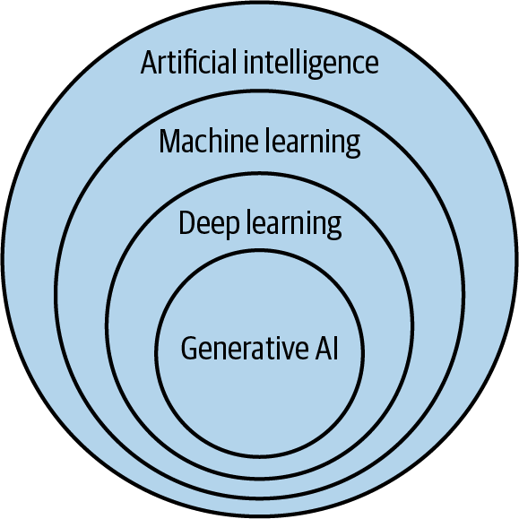
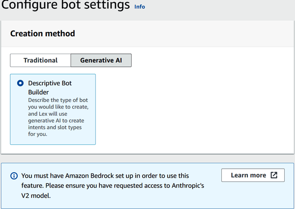

Artificial intelligence (AI) is reshaping industries faster than ever. International Data Corporation (IDC) predicts that by 2027, global spending on AI systems will reach $500 billion, more than double what organizations spent in 2023. Companies are investing heavily in AI to automate tasks, improve customer experiences, and innovate across their products and services.
You see AI at work every day, whether it’s the personalized recommendations on your favorite streaming app, an intelligent chatbot that answers your banking questions, or real-time systems that detect fraud before it impacts customers. As AI capabilities continue to grow, so does the demand for people who know how to build and deploy these solutions in the cloud. This is also a key reason that AI is covered in the AWS Certified Cloud Practitioner exam.
In this chapter, we’ll break down the core ideas behind AI, machine learning (ML), deep learning (DL), and generative AI (GenAI), and see how each fits into the broader AI landscape. We’ll also look at key AWS services that support these workloads. They include Amazon SageMaker for building and deploying ML models, AWS Lex for creating conversational interfaces like chatbots, and Amazon Kendra for enterprise search.
Finally, we’ll touch on AWS data analytics services such as Athena, Glue, Kinesis, and QuickSight.
AI covers a wide range of technologies. But at the core, it’s about building machines and systems that can act in ways we usually associate with human intelligence. This means they can learn, reason, perceive their environment, and make decisions.
Within this broad field is ML. It is about teaching machines to learn from data without explicitly programming every rule. Instead, these systems rely on statistical models and algorithms, such as regression, decision trees, clustering, and reinforcement learning. You see ML in many applications like email spam filters and recommendations for ecommerce systems.
DL is a subset of ML. It uses artificial neural networks with many layers (this is where “deep” comes from). These networks can extract and build features from raw, unstructured data such as images, audio, or text. For instance, DL powers capabilities like tagging people in photos, translating languages, or powering chatbots.
GenAI is a part of DL. It uses models such as generative adversarial networks (GANs) and large language models (LLMs) to create entirely new content, such as text, images, audio, video, and code. Today, you see GenAI in tools like ChatGPT and Claude, as well as those from Amazon Bedrock.
Figure 13-1 shows how AI, ML, DL, and GenAI relate to each other.

Running modern AI, ML, DL, and GenAI workloads often requires large amounts of compute, memory, and storage. AWS offers a myriad of services to meet these demands.
Amazon SageMaker is a platform for building AI, ML, DL, and GenAI solutions. It covers the entire development lifecycle, from bringing in and preparing data to experimenting with models, deploying them, and monitoring their performance. For generative AI projects, SageMaker integrates with Bedrock, which lets you design GenAI applications, knowledge bases, and agents.
A key feature in SageMaker is its notebooks, which are built on the Jupyter platform. They let you write and run code, visualize data, and document your workflows all in one place. This setup makes it easy to experiment with different approaches, build and refine models, and share your findings with your team.
When your models are ready for production, SageMaker simplifies deployment at scale, whether you’re running real-time predictions or processing data in batches. It does this through MLOps pipelines. They are automated workflows that bring AI, ML, DL, and GenAI models into production environments. SageMaker also supports CI/CD. This automates the building, testing, and rollout of models or applications. This allows you to release updates quickly with minimal manual work.
SageMaker integrates with ETL pipelines as well. This means you can pull data from different sources, transform it into the format you need, and load it into storage or analytics systems for use in your ML projects.
Here are a few other key features of Amazon SageMaker:
SageMaker brings together AI, ML, DL, and GenAI workflows alongside data engineering and analytics tasks. It connects easily to AWS services like EMR, Glue, Athena, and Redshift.
Built on AWS DataZone, SageMaker helps organizations securely discover, share, and manage data assets and AI artifacts. It offers unified metadata tracking, fine-grained access controls, asset lineage, and policy enforcement across your analytics and AI projects. These governance tools support responsible AI practices, such as detecting model bias, implementing toxicity safeguards, and monitoring models throughout their lifecycle.
SageMaker Lakehouse creates an open, unified data layer that combines data from Amazon S3 data lakes, S3 Tables, Amazon Redshift, and other external sources. You can query this data in place using engines like Athena, Spark, and SQL, and it supports federated queries along with zero-ETL ingestion from various databases.
This uses AI to generate code suggestions within integrated development environments (IDEs) like Visual Studio Code and JetBrains. There is support for various languages, like Python, Java, and JavaScript.
AWS Lex allows you to build virtual assistants and conversational interfaces for your applications. It combines advanced natural language understanding (NLU) with automatic speech recognition (ASR). In simple terms, Lex acts as the brain behind chatbots. This allows them to understand what users say or type, pull out key details (known as slots), and respond in an intelligent way. Lex also works with both text and voice inputs.
This service comes with built-in integrations for services like Amazon Connect. This streamlines the process of creating interactive voice response (IVR) systems for customer service. You can also connect your Lex bots to mobile apps, websites, or messaging platforms such as Facebook Messenger.
Since Lex uses the same deep learning technology that powers Amazon Alexa, it delivers strong speech recognition and NLU right out of the box. It also integrates with AWS Lambda, which means your bots can execute business logic behind the scenes, like booking an appointment or looking up user information.
Let’s see how to use Lex:
Log in to AWS.
Enter Lex into the search box. Select it.
Choose “Create bot.” You will see the bot setup screen in Figure 13-2.

For “Creation method,” select Traditional. This lets you manually define intents and slot types.
Enter a name for your bot.
Under IAM permissions, choose a Runtime role. Select “Create a role with basic Amazon Lex permissions” to automatically create a role.
Under “Bot error logging,” select Enabled to allow Lex to log errors for debugging.
Under the Children’s Online Privacy Protection Act (COPPA), choose No unless your bot is subject to COPPA compliance.
For “Idle session timeout,” leave it at the default of 5 minutes, or adjust to your needs (between 1 and 1,440 minutes).
Select Next.
For Language, select English (US) or your preferred language from the drop-down list.
Under “Voice interaction,” you can choose a text-to-speech voice. To hear how each voice sounds, click Play next the voice sample, and then choose the one you like.
For “Intent classification confidence score threshold,” leave it at the default 0.40 unless you have specific accuracy requirements. This sets how confidently Lex must match user inputs to intents (range is 0.00 to 1.00).
Under “Describe your use case,” enter a description of what your bot should do. For example, you can enter something like this: “We want a bot to help customers order food (using item id, quantity, size), check order status, and cancel an order. Use Order ID for indexing orders.”
Select the model you want to use for GenAI features. For example, choose Claude V2 under Anthropic if enabled in your account.
Select Done.
By building this bot with GenAI, you start off with a basic set of intents and slot types. These are the building blocks that define what your bot can understand and ask users. But you’ll still need to review and fine-tune them to match your business goals. For example, if your bot needs to place orders or check order statuses, you’ll have to connect them to your backend services, like with AWS Lambda functions, to carry out those tasks. The benefit is speed. GenAI sets up the groundwork for you, so you can spend more time polishing the user experience and wiring up the workflows that make your bot useful.
Amazon Kendra is an AI-powered enterprise search service that leverages natural language processing and deep learning. It enables users to ask questions in conversational language (like “What are my 2025 healthcare benefits?”) and returns the most relevant snippets, answers, or documents by understanding the context and intent behind the query.
This is how it works:
Kendra connects to your data sources like SharePoint, S3, Salesforce, ServiceNow, Google Drive, or custom repositories. It then crawls, parses, and indexes the documents to make them searchable.
When a user enters a query, Kendra uses NLP to determine intent, expands with synonyms, and performs both semantic and keyword searches.
Kendra ranks the results using relevance models based on document metadata and user feedback. It can deliver short factoid answers, long-form descriptive passages, or FAQ-style matches extracted directly from indexed content.
With its GenAI Index, Kendra supports retrieval‑augmented generation (RAG) workflows. This improves the results of LLMs by retrieving relevant information from the documents.
Kendra also helps to mitigate the issue of data silos, such as by consolidating content from diverse repositories. This centralized approach allows teams and customers to search FAQs, wikis, tables, and full documents quickly and accurately. Plus, its built-in ML continuously refines result relevance by learning from user interactions.
Data analytics tools help companies make sense of their data. They collect, process, analyze, and visualize information so that teams can spot trends, find patterns, and make decisions backed by evidence. Whether you’re looking at customer buying habits, operational metrics, or website traffic, these tools turn raw data into useful insights. Most of them come with features for preparing data, running queries, and generating reports.
We’ll look at the data analytics services AWS offers.
Amazon Athena lets you run SQL queries directly against data stored in Amazon S3. You only pay for the data you scan, so it’s an affordable way to explore massive datasets, run ad hoc analyses, or build dashboards and reports on the fly.
Athena integrates with file formats like CSV, JSON, Optimized Row Columnar (ORC), Avro, and Parquet. Under the hood, it uses Presto, a powerful open source SQL engine designed for fast, distributed queries. This means you can run complex joins and window functions and handle arrays.
Athena is useful for quick log analysis, exploring data lakes, or feeding results into BI tools.
Amazon Kinesis is a set of services built to handle real-time streaming data at massive scale. You can bring in data from sources like website clicks, financial transactions, social media feeds, server logs, or IoT devices, and make that data instantly available for analysis. Use cases include detecting fraud in transactions as it happens, personalizing content in real time, or monitoring the performance of your applications.
Kinesis comes with several key components. There’s Kinesis Data Streams for ingesting data in real time; Amazon Data Firehose for delivering streaming data into destinations like Amazon S3, Redshift, or Elasticsearch; and Kinesis Data Analytics, which lets you run SQL queries on streaming data for immediate insights. It also includes Kinesis Video Streams for securely streaming and processing video.
Amazon Glue is a data integration service that helps you discover, prepare, and combine data for analytics, ML, or application development. It scales automatically to handle anything from a few gigabytes to petabytes of data, and you only pay for the compute time your jobs use.
With Glue, connecting to different data sources is straightforward. You can pull in data from Amazon S3, RDS, DynamoDB, and streaming sources like Kinesis or Kafka. Glue uses crawlers to scan these sources, determines their schemas, and organizes everything in the Glue Data Catalog.
Glue also helps to simplify ETL processes. You can build data transformation jobs using a visual interface in AWS Glue Studio or write scripts in Python or Scala. It supports both batch processing for large datasets and streaming processing for real-time data.
Amazon QuickSight is a BI service that helps you share insights across your organization. You can connect it to different data sources, run fast and scalable analyses, and build interactive dashboards that anyone can access from their laptop, tablet, or smartphone.
One of QuickSight’s most useful features is embedded analytics. This lets you integrate interactive dashboards and visualizations directly into your apps or internal portals, giving users the data they need right where they need it. QuickSight also uses ML to deliver features like anomaly detection and forecasting. Even if you’re not a data scientist, you can easily spot trends, outliers, or future projections with just a few clicks.
In this chapter, we looked at the foundations of AI, including ML, DL, and GenAI, and learned how these technologies allow systems to perform tasks that mimic human intelligence. We examined AWS services like Amazon SageMaker for building and deploying AI solutions, Amazon Lex for creating conversational interfaces, and Amazon Kendra for enterprise search with NLU. We also covered data analytics services such as Athena, Kinesis, Glue, and QuickSight, which help organizations transform raw data into actionable insights.
In the next chapter, we’ll take a look at AWS developer tools and other essential services.
To check your answers, please refer to the “Chapter 13 Answer Key”.
What does machine learning (ML) enable systems to do?
Perform only pre-programmed tasks
Store relational data in databases
Learn from data without explicit programming of rules
Encrypt data automatically
Deep learning (DL) is a subset of which technology?
Generative AI
Natural language processing
Data analytics
Machine learning
What AWS service is used for building and deploying ML models?
Amazon Kinesis
AWS Lex
Amazon SageMaker
Amazon Athena
What is retrieval-augmented generation (RAG) used for in Amazon Kendra?
Running extract, transform, load (ETL) jobs faster
Improving large language model (LLM) results with retrieved document context
Generating SQL queries automatically
Creating business dashboards
What is the primary function of Amazon Bedrock?
Building ML models from scratch
Providing managed access to foundation models
Running SQL queries on Simple Storage Service (S3)
Managing Internet of Things (IoT) devices